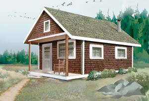
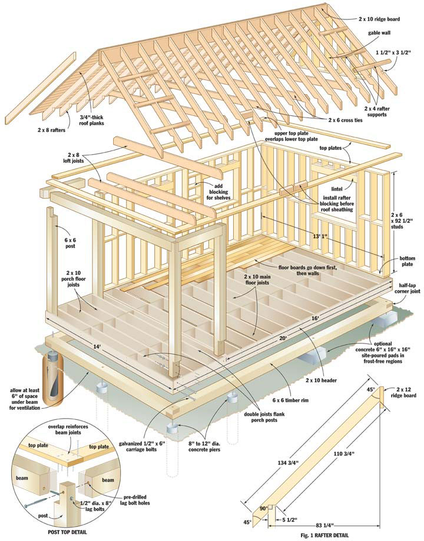
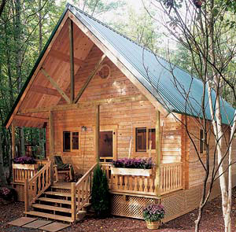
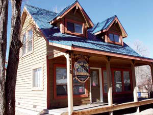
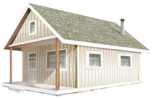
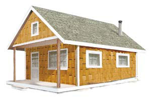
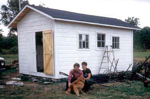

Build This Cozy Cabin
Anyone with basic carpentry skills can construct this classic one-room cabin for under $4,000.
By Steve Maxwell
June/July 2006
Rays of early-morning sunlight gently peek through the windows, easing you awake. Looking down from the sleeping loft, you see everything you need: a pine table; a box piled with hardwood, split and ready for the woodstove; and a compact kitchen in the corner. This is the cabin dream.
In this article, I’ll show you how to build a 14-by-20-foot cabin featuring a sleeping loft over the porch for about $4,000. Who can resist it?
My own cabin adventure began in 1986, when I built one as an inexpensive place to stay while constructing my house - that’s when I began learning what makes cabin design and construction successful. (I’ve always had a debt-free approach to developing my property.) The four years I lived in this cabin were a good time in my life - perhaps one of the best. I fondly recall the simplicity of waking each morning with the sole purpose of building my own house, working well into the evening.
What follows is a cabin plan with the hands-on know-how I wish I had 20 years ago. It won’t replace the need for basic carpentry skills, but it will alert you to the main challenges of framing a cabin and how to clear the most important hurdles. And even if you never build a cabin of your own, these basic instructions will be useful anytime you need to build a garage, shed or other outbuilding. (For more on the author’s cabin experience, see “Our Life in a One-room Cabin,” below.)
I believe in building for the long haul. When it comes to cabins (and everything else for that matter), this means working to the same standards of durability and beauty that you’d apply to a full-size house, even though the style, size and soul of a good cabin are entirely different. I’m sold on durability because it takes such small amounts of extra care, materials and money to yield a huge increase in longevity. Although a cabin certainly can be framed less stoutly than the design I’ll show you here, I’m convinced the wisest use of resources often means going beyond what’s merely good enough.
A Firm Foundation
Every well-built structure begins with the foundation. In regions where frost isn’t an issue, site-poured, 6-by-16-by-16-inch shallow-depth concrete pads work just fine. If this is similar to the approach used on new houses in your area, then it’s OK for use under your cabin.
Cold climates are a different matter, and one of the best cabin foundations you can choose is established easily with minimal tools and time. Concrete piers extending below the frost line, poured within round cardboard tubes, are a time-proven approach to lightweight construction that offers a couple of advantages. Besides raising the structure off the ground and isolating it from the annual freeze/thaw movements of the soil, concrete piers provide good support around the perimeter of your cabin, without the need for full-scale forming and pouring.
In this cabin design, you need one pier at each corner of the cabin, one in the middle of each long side, three piers spaced evenly on the front of the porch and one in the middle of the rear wall. In light soil, it’s reasonable to dig the 10 holes you need for 8- to 12-inch-diameter pier forms using a long-handled shovel. Otherwise, call in a neighbor or contractor with a tractor-mounted auger. You can use 8-inch concrete piers, but the larger size is more forgiving if you don’t get the alignment just right.
The best way to mark your foundation outline is with 12-inch spikes pushed into the earth and connected with nylon string. (See “Choose a Rock-solid Start,” below, for layout tips.) Regardless of the foundation design you choose, the main construction challenge is the same: leveling the top of the foundation pads or piers. A laser level is easy to use and even allows a person working alone to level a foundation successfully. You don’t need to buy a laser level for this project, but it’s definitely worth borrowing if one is available from a friend or neighbor.
When setting concrete pier forms in the ground, dig the holes large enough to allow room for side-to-side adjustment. The outside edges of the pier forms should extend a bit beyond the outer dimensions of your building. As inexpensive insurance against frost jacking of foundation piers (when the piers are pulled toward the surface by seasonal freezing, even though they extend below the frost line), wrap the outside of each pier tube with black polyethylene plastic before setting them into the holes and packing soil around them. While the concrete is wet, vertically embed five-eighths-inch L-shaped threaded metal rod anchors, extending at least 7 inches above the concrete, short end down. Later on, these will hold down the base of the floor frame.
Building the Floor Frame
There are many ways to frame a cabin floor, but I favor the timber-rim approach for a couple of reasons. “Timber rim” refers to a load-bearing frame of timbers that defines the perimeter of the floor area. It’s better than a continuous foundation wall because it eliminates the need for lots of block work or a poured foundation, and it offers great stability. For this project, it provides continuous support for a building that’s held up at only 10 points around its perimeter. Another plus is that timber-rim construction is durable and simple for first-time cabin builders.
Start by gathering rot-resistant 6-by-6 timbers for the outer rim. Timbers for the ends of the cabin and porch should be long enough to do the job in one piece. If you need to splice two timbers together for the 20-foot cabin sides, that’s fine. Just locate the splices directly on top of your concrete pads or piers. (It is possible to get away with thinner pieces of wood here, but that would require adding more piers - an option that’s probably less attractive than dealing with thicker timbers.) Be sure to make half-lap corner joints to connect the rim timbers.
Measure, mark and drill 1-inch-diameter holes in your 6-by-6s for the five-eighths-inch threaded rod anchors you embedded in your concrete piers, then settle the timbers in place over the rods.
Before bolting down the timbers, double-check that the top surfaces of the 6-by-6s are level to within one-eighth inch of each other. Pouring concrete is coarse work, and it’s possible the foundation piers aren’t exactly the same height now that they’ve hardened. Now’s the time to identify and correct any such errors. Install shims underneath the uneven timbers to make them level; bolt them down tightly under 2-inch washers; then check one last time with a level. You now have a sturdy timber rim on which to begin building the cabin. As long as the bottom of the timber rim is at least several inches above the soil, natural ventilation should keep this structure strong for many decades.
The timber rim you just installed supports floor joists and headers (the frame around the joists) that in turn form the cabin and porch floor. By running joists across the 14-foot width of the building, you’ll have the stiffest possible floor for a given width of joist, minimizing squeaks and ensuring long-term durability. As a rule of thumb, 2-by-10s spaced on 16-inch centers across the span of this cabin will give you a good floor. But because the type of wood affects the total allowable span - building codes may vary where you live - double-check floor joist sizes with your local authority. You might consider using 2-by-10 joists across the porch and 2-by-12s for the main floor (but if you do, remember to use a 12-inch-wide header for the main floor, or your joists will be taller than the floor frame). Using 2-by-12s raises the cabin floor slightly, creating a lip at the door that helps repel water and snow.
Regardless of the floor framing wood you choose, use five 3 1/2-inch nails on each joint connecting the floor joists to the headers. Make sure the edges of your floor frame are perfectly straight and use a string as a reference to ensure that this happens as it should. Use 3 1/2-inch hot-dipped, galvanized nails driven at an angle to connect the floor frame to the timber rim. You also can use galvanized connector plates.
Now’s the time to apply a floor surface to your joists, and that means you have a decision to make: If you want flooring that’s easy to build, inexpensive and requires no maintenance for a cabin that won’t see much cold weather, then three-fourths-inch softwood planks are the way to go. Even left completely unfinished, these form a fine, rustic floor that’s easy to sweep clean. Over time, bare wood like this also takes on a burnished beauty that’s as pleasant to look at as it is to live with.
Or do you want a better floor to keep out drafts and bugs, while retaining simplicity? Then consider shiplapped floorboards. They’re one step up from square-edged planks, offering all the same advantages as plain boards, while also preventing board-to-board gaps. The best floor option is five-eighths- or three-fourths-inch plywood, though this makes sense only when you’re planning to apply a finished floor material over the top. Plywood keeps drafts out and adds an element of rigidity that dimensional lumber can’t match, but it also looks unattractive, especially in a cabin.
Wall Framing
With your rough floor in place, you can now build the walls. Stud-frame construction is still the most popular approach for residential projects, and it makes sense for cabins, too. Although you can save money by framing with 2-by-4s, I recommend 2-by-6s instead, even if you won’t be insulating. The extra 2 inches of frame depth is stronger, looks better and offers greater storage opportunities for small items sitting on shelves between the studs.
The illustration in the Image Gallery shows how stud-frame walls have three main parts: the plates (horizontal members that form the top and bottom of the walls); studs (vertical frame members); and lintels (horizontal members that span doors and windows).
Start by cutting one top and one bottom plate for the rear wall - the one opposite the door. Make these plates out of one 2-by-6 each, then temporarily screw them together so all sides are flush. Joining them together ensures accuracy of the marks you make to show stud location. Make these plates 13 feet, 1 inch long. This way the completed front and back walls will measure 14 feet wide when flanked by the two long walls that will go up on each side of them.
With the pair of plates on edge, use a carpenter’s square to draw lines across the edges of the plates at the same spot. Each pencil line shows where one side of each stud should be located. An “X” marks the side of the line where the stud needs to sit. Studs measuring 92 1/2 inches long should be spaced 16 inches apart from center point to center point, with extra studs where door and window openings will go later. Before you frame openings for windows and doors, you need to know the sizes of the openings required for them. Make window openings 1 inch wider and 1 inch taller than the overall size of your window (1 inch wider and a half inch taller for a prehung door, when you get that far).
Remove the screws that temporarily held the top and bottom plates together, separate these pieces about 8 feet apart (with the bottom plate near its final place on the wall), and then position your wall studs between them. Begin by nailing the plates to the ends of the full-length studs, then cut and add shorter studs to form the window opening. Use three 3 1/2-inch nails per joint. If you’re planning to build insulation into your floor, add a second bottom plate to the wall to raise it up. Now gather some eager volunteers and get ready to heave the wall upright and into position.
This is an exciting moment, but you’ll need a few tools to succeed. In addition to a framing hammer and some 31/2-inch nails, an 8- to 10-pound sledgehammer is helpful for jostling the wall into final position, and you’ll need a 24- to 48-inch level to check and align its orientation. Raise the frame with a couple of helpers, then push, pull and pound it into alignment with the edge of the floor frame. Use your level to help align the wall so it’s perfectly vertical (plumb), and then drive two nails into each space between the studs on the bottom plate, extending down into the floor boards and header.
Your wall is up and secure now, but it’s not yet strong. Brace it with some long pieces of lumber extending to the ground (you’ll take them off later, so use the good stuff), then repeat the wall framing process for the two neighboring side walls.
When you’ve framed the last wall (the one with the door) and raised it, check and adjust all walls so they’re straight and plumb. This may take some time, but don’t continue until you’ve correctly finished this detail. Use taut strings (as you did when assembling the floor frame) to make sure the top edges of the walls are truly straight. When you’re satisfied, get ready to cut and apply another layer of 2-by-6s over the existing top plate. You’ll need to arrange these parts so they overlap the joints between wall segments (see “Post Top Detail,” at the bottom left corner of the illustration), but there’s another detail you need to address first.
The illustration in the Image Gallery shows you how two 6-by-6s or log posts should be installed extending from the top corners of the side walls to provide support for the porch roof. Begin by fastening two 6-by-6 vertical posts to the front corners, then rest three horizontal 6-by-6s on top, extending to the porch posts temporarily supported by props of lumber. When all this is in place, tie everything together with a second 2-by-6 top plate.
What you should have at this stage is the four walls of the cabin raised, with an additional 4-foot frame extension from the cabin’s front wall, which will support the porch roof. The roof fits over the cabin walls and porch in exactly the same way. Here’s a tip: In general, you can use 12-inch spikes to hold together large framing posts, such as the 6-by-6s described above, but you have to drive them into pilot holes. Although spikes aren’t strong enough to resist shear loads, they do an excellent job holding one part in place over another.
For siding, I recommend wall planks because they look so much better from the inside of your cabin. If you are looking for inexpensive siding, or you plan on insulating the wall’s interior and adding interior siding (covering the 2-by-6s from the inside), you can use plywood or oriented-strand board (OSB) wall siding panels.
Roof Framing
There are many ways to frame a roof, but when you want to create usable loft space, you need to address a few design issues. The first is roof pitch. For both aesthetics and efficiency, the 12:12 pitch is best. This means that for every 12 inches of horizontal run, the roof rises 12 inches. In other words, the slope is 45 degrees from horizontal, with a 90 degree angle formed at the peak.
The parts of your cabin that form the slope of your roof are called rafters, and cutting them accurately will be the most challenging part of building your cabin. That said, if you tackle the job with care - checking for accuracy early on - you’ll succeed.
The first step is to take another look at the illustration in the Image Gallery. Fig. 1 shows a side view of the rafters you need to build. You’ll need 34 in all. This includes 30 that span the cabin itself, and two more pairs that extend to create the overhangs at the porch and the rear wall. You could use 2-by-6 rafters, but if you plan to insulate, you’re better off using 2-by-8s spaced on 16-inch centers. Although it costs a bit more, the extra wood actually makes it easier to create the required notches and angles because there’s more wood with which to work. As with the floor joists, check with local building authorities on exactly what size of wood is required where you live.
Start by marking rafter locations where they will sit on the top of the side walls, ideally atop wall studs. Use the same “line-and-X” marking scheme you used to lay out the top and bottom wall plates.
Next, measure the width of your building across the top of the side walls. It should be 14 feet. Chances are good that your cabin width across the front and back walls will match this measurement, but maybe not across the middle. No problem. Take one or two spare planks, rest them across the top of the building and spike one end of each in place. Get some help wrestling the walls inward or outward (whichever is needed to get a 14-foot building width), then spike the second end of your brace planks down. These will come off later, when the rafters and cross ties are added, so don’t pound the nails all the way home. Also, make sure these temporary braces are well away from the rafter locations you marked earlier. You don’t want them to get in the way of the rafters.
Follow the pattern on the illustration in the Image Gallery (Fig. 1) and cut out a pair of rafters. Although they should fit just right on your cabin, it always pays to double-check your cuts with a tape measure. Tack a piece of 11/2-inch-thick scrap wood to the top end of one rafter (to simulate the ridge board that will be part of the completed roof), then get some help temporarily hoisting the rafters up and leaning them against each other. What you’re looking for is a gap-free fit where the rafter meets the top of the walls, and where they come together at the peak. While you’re working, test the location of the rafter pairs at various places across the building. If they fit in one place and not another, that’s a sign the width of your cabin isn’t consistent after all.
When you’re satisfied with your pair of test rafters (and have adjusted their size if necessary), make the entire batch of 34 rafters. Of these, you must add a special feature to 12 of them.
The illustration shows how you should cut 1 1/2-by-3 1/2-inch notches along the top edge of these 12 special rafters to accept 2-by-4 braces. These support the outer pair of rafters on each end of the cabin, the ones that create the overhang. The best way to cut these notches accurately and quickly is by temporarily clamping two sets of six rafters together, marking each set as a group, then cutting the notches with multiple passes from a hand-held circular saw. It’s easy to knock out the slivers of remaining wood with a hammer and chisel.
Total length of the cabin’s ridge is 22 feet (20 feet across the building and porch plus 1 foot of overhang at each end). This means the ridge board probably will have to be made in two lengths of 2-by-10s. Prepare these now, arranging the joint between them so it lands in one of the spaces between rafter pairs. Next, lay the ridge boards end-to-end on top of one wall plate and then transfer rafter locations onto these boards.
When it comes time to raise the rafters and ridge boards, do one half of the cabin at a time. Raise one pair of rafters at the end of the cabin and another pair in the middle, near the place where the ridge board will end. Fill in the spaces along the wall with more rafters, angling screws so they penetrate the ridge board and sink into the ends of the rafters, then repeat the process for the second half of the roof. Add the 2-by-4 rafter supports, then the four rafters that form the front and back eaves.
Concerned about the two-part ridge board? You shouldn’t worry. The roof sheathing that comes next will join these two halves together quite solidly. I strongly recommend using solid-wood planks that are three-fourths inch thick, not the more expedient option of plywood or OSB, unless you are building in a hurry. The underside of the roof plays a large visual role in this cabin, and sheet woods never enhance the natural backwoods aesthetic. Just remember to lap the roof planks across the area where the two ridge boards meet.
You’re now well on your way to finishing your cabin. Add the ceiling joists that tie the cabin together at the top and form the floor of the sleeping loft. Shingle the roof, install doors and windows, and then apply your exterior wall treatment.
Once your cozy, affordable little cabin has become part of your life, you’ll realize something that many folks never understand: Small really is beautiful!
Cost Estimates For Your Cabin
The following includes the frame, rough floors and shingled roof, but not windows, doors and exterior siding. All costs are rounded up to account for miscellaneous expenses.
Total cost: under $4,000
Floor assembly: $900
• two 20’ 6 x 6 rot-resistant beams (timber rim, length sides)
• two 14’ 6 x 6 rot-resistant beams (timber rim, width sides)
• 27 14’ 2 x 10 boards (blocking, joists and headers)
• nine 5/8” plywood tongue-and-groove subfloor panels
Walls and porch frame: $1,000
• 50 8’ 2 x 6 studs (walls)
• 15 14’ 2 x 6 boards (wall plates)
• five 8’ 6 x 6 rot-resistant wooden posts (porch)
• one 14’ 6 x 6 rot-resistant beam (porch)
• 21 7/16” oriented-strand board wall siding panels (wall planks)
• six 14’ 2 x 6 fascia boards (exterior wall trim)
Roof: $1,500
• 34 12’ 2 x 8 boards (rafters)
• two 12’ 2 x 10 boards (ridge board)
• 17 14’ 2 x 6 boards (cross ties)
• four 8’ 2 x 4 studs (rafter support)
• two 20’ 2 x 8 boards (blocking)
• 17 3/4” spruce plywood panels (roof planks)
• wooden shakes for 550 square feet of roof surface; roof liner, gutter apron
Hardware: $350
• six 12” spikes (foundation markers)
• 10 10” Sonotubes (pier forms)
• 10 5/8” threaded rod anchors (foundation)
• eight 1/2” x 6” carriage bolts (header anchors)
• 10 pounds of 3 1/2” ardox (spiral-shanked) nails (wall studs, floor joists)
• 10 pounds of 2 1/2” ardox nails (subfloor, roof planks)
• eight 1/2” x 8” lag bolts (post tops)
• 15 pounds of 1” roofing nails
Choose a Rock-solid Start
Right from the beginning, you’ll be faced with the challenge of creating an outline for your cabin that has truly square corners. To deliver accuracy, a carpenter’s square just won’t do it - you’ll need to use geometry.
The overall width of the cabin is 168 inches, and the overall length (including porch) is 240 inches. According to the Pythagorean Theorem (Remember high school geometry class?), the diagonal line connecting these two is:
Length of diagonal = length of one side squared + length of the other side squared (then take the square root of this sum). It works out to be 293 inches for the length of the diagonal side of the Pythagorean triangle when the corner is square.
Start by laying out one side of your building, with a spike at both corners, and another spike at the porch corner - that’s three spikes in a row, connected by a string. Next, grab two large tape measures and a couple of people to help hold the tape ends on the spike heads: You’re about to mark the other side of the building so the corners are perfectly square.
Hook one tape measure to each corner spike (you’ll need some help holding them there), and then extend both tapes so the 168-inch mark on one tape intersects the 293-inch mark on the other. The spot at which this happens is the place where one corner of the remaining cabin side should be located. Sink a 12-inch spike there. Repeat the process for the other side, then double-check that the opposite sides are the same length.
If you’re building on bedrock, lay out your cabin footprint and mark the corner points with a stout felt-tip marker, then rent a hammer drill. Boring holes in the rock is the best way to establish key anchor points for the strings to define the walls of your structure. Bore oversized holes, then tie a mason’s line to half-inch-wide, 6-inch-long bolts and slip them in place. Bolt size isn’t critical because they just drop into oversized holes bored into the rock.
Exterior Options
The exterior wall treatment you choose for your cabin matters a great deal because it sets the tone for how the place looks and how much maintenance you’ll be saddled with over the years. The exterior of your cabin can be made of wooden shingles, boards and battens (see illustration), wooden panels or other materials. Research the pros and cons of each material before choosing one for your cabin, and choose a material that won’t burden you with much maintenance.
Cedar shingles are a terrific option because they look great in a rural setting, last many decades and are lightweight. They always live up to their reputation on roofs, and on walls, cedar shingles will satisfy those people who insist on wood siding. Hand-split cedar shingles taken from your building site are ideal if you’re lucky enough to have them, but commercially sawed cedar shingles also work well.
Are you planning to install stone or brick yourself? Buy all the time you need to get the job done by installing windlock asphalt shingles (see illustration) on walls. These interlock physically, allowing you to install them vertically without the usual flapping you’d get if you tried the same thing with regular shingles. They look pretty good on their own, even if you never get around to the masonry.
For a low-cost approach to exterior siding, use either board and battens or 4-by-8 wooden panels. These two options are easy to put up, and they look good for awhile. But in time they can look shabby unless you’re diligent about refinishing.
Our Life in a One-room Cabin
In 1985, my wife, Mary, and I purchased 91 1/2 acres on Manitoulin Island in Ontario, and a year later, we built a one-room, 200-square-foot cabin. We were homesteading beginners, and the job took us four 60-hour workweeks and $550 to build what we now affectionately call “The Shed.” Neither Mary nor I had ever built a structure before The Shed, so it’s smaller and built less stoutly than the cabin design here.
For the floor frame and roof rafters, I hewed logs from our forest; for most of the rest of the project, I bought the least expensive locally sawed lumber I could find. I built The Shed with just a few tools: a broad axe, chain saw, claw hammer and a carpenter’s handsaw, square and level.
For four years, every spring through fall, we lived in The Shed as we built our 2,500-square-foot, three-story Victorian-style stone home (see photo). By living in that little cabin, we saved thousands of dollars and boosted our productivity by eliminating daily travel to the work site. We shared that space with mice, newborn livestock, our golden retriever, King, and even a sick calf that had been abandoned by its mother.
Each winter until our hand-built home was ready, Mary and I grudgingly left The Shed and traveled back to the city to overwinter and earn money. But doing so enabled us to live in that tiny rustic cabin for the rest of the year, which was a crucial steppingstone to the rural life we now enjoy.
“Starting out simply and debt-free in The Shed was very important for us,” Mary recalls, “but let’s just say that Steve liked it more than I did.”
Whenever I tell people our story, they usually shake their heads and wonder how we succeeded. But the truth is the cabin life was the lap of luxury for me at the time, because deep down inside, I’ve always been a country person who had the misfortune of growing up in a big city.
Getting Organized
The biggest blessing of cabin life is its simplicity. But you don’t get that benefit just because you’re living in a tiny space. In fact, a cabin this size will drive you crazy if you’re not ultraorganized. We installed hooks, nails, pegs and shelves, and slept on folding cots - all of which allowed us to live in the space comfortably. What’s more, these space-saving devices doubled during the workday as room for tools and hardware, and space for workshop tasks.
If you stay organized, the cabin lifestyle is wonderful for personal productivity. With no distractions from entertainment, we happily worked 12 hours a day, six days a week on our home, quarrying stone by hand and using it to build the 350 ton basement. In one season of cabin living, we built the three-story frame of our home almost entirely by ourselves.
The Accommodations
Our kitchen appliances in The Shed consisted of a two-burner hot plate and a deep crockpot. We made toast in an old-fashioned flip-down toaster and kept perishables in a 1951 Frigidaire that we acquired after hooking up to the electricity grid. For access to water, we drilled a well and pumped water into a pressurized tank in a corner of The Shed. We took baths every Saturday night in a steel-panned wheelbarrow, filled with water that we heated a gallon at a time in the crockpot. We washed our work clothes with a scrub board in the same wheelbarrow, and then dried the laundry on ropes tied across the inside of The Shed.
Life was simple and good, but also strenuous and Spartan - especially for Mary, who grew up in South America in an area where camping and outdoor living were not a part of common culture. But to us, the benefits of cabin life were, and still are, obvious. The cabin made it possible to cut costs, live efficiently and work nonstop. More than ever, I now see that the ability to focus exclusively on your dream home for three seasons a year while not leaving the property to earn money is a tremendous luxury indeed.
20/20 Hindsight
I look back on my days in The Shed with fondness, but I admit I couldn’t live there now. Mary and I have four children, and raising them with any degree of sanity requires more than 200 square feet of space. If I were 20 years younger and starting an adventure in the country again, I’d still begin by building a cabin. The Shed served me just fine, but I would design it a little differently, starting with the size.
I’d make the cabin bigger, easier to heat and slightly more comfortable. I randomly chose The Shed’s 10-by-20-foot dimensions based on no building experience whatsoever. Now I know that making the cabin just 5 feet wider would have greatly improved the amount of useful space. Also, I would spend more money to add insulation, running hot water and a small sink with a drain. By doing so, I could have extended my home-building season longer into the spring and fall. Furthermore, I would build the base on a deep foundation.
These days, The Shed is looking old and sits a little wonky as its base moves a little more with each year’s frost. But I don’t suppose our children would ever let us tear it down. For them, The Shed is a place of legend and a tangible connection to the stories we tell them about how their family came to set down roots on the land they’ll inherit.
You Can Build One, Too!
If you feel drawn to the simple cabin lifestyle, I say go for it. Someday, I look forward to experiencing the cabin lifestyle again, even just as an occasional retreat. Something about the tiny size of a cabin puts me at ease. Some of my best cabin memories go back to cool fall evenings - tucked into my sleeping bag, I’m dog-tired as the warmth of our antique woodstove wafts across my face. This lifestyle gives me the kind of deep-down satisfaction and enjoyment that is only attainable when you mix hard work with a compelling dream and your own piece of land.
Cabin Kits
Many people dream of building a cabin or cottage in the woods, beside a lake, along a bubbling brook or on top of a mountain with sweeping views. But cabins are not just for wilderness living. They also can offer cozy space as a guest room, an artists’ retreat, a craft center or a small office.
The cabin kit manufacturers listed below are divided into three construction categories: log, frame and panel. Most kits consist of the necessary materials for the exterior walls, interior wall studs, roof and floor, and include windows, doors, fasteners, trim and construction manuals. The kits do not include foundations, insulation, or electrical and plumbing packages. The base prices listed below do not include shipping costs.
To find the cabin that best fits your budget and construction experience, read each company’s literature carefully and then ask lots of questions before you buy a kit.
Log Cabin Kits
Appalachian Log Homes
11312 Station West Drive
Knoxville, TN 37922
(800) 726-0708
“Yukon Trail II”
$28,000
18 by 24 feet; 432 square feet
Conestoga Log Cabins
246 N. Lincoln Ave.
Lebanon, PA 17046
(717) 306-4490
“Heritage”
$24,595
14 by 27 feet; 378 square feet
Country Log Cabins
390 Swartz Road
Lewisburg, PA 17837
(877) 295-0085
“Mahoning”
$19,025
20 by 20 feet; 400 square feet
Merrimac Log Homes
32 Old Concord Road
Henniker, NH 03242
(866) 637-7462
“Winnipesaukee”
$13,695
20 by 24 feet; 480 square feet
Northeastern Log Homes
P.O. Box 46
Kenduskeag, ME 04450
(800) 624-2797
“Getaway”
$17,570
18 by 24 feet; 432 square feet
Frame-wall Cabin Kits
Cabins.ca
30570 Great Northern Ave.
Abbotsford, BC V2T 6H4
(604) 504-1555
“Algonquin”
$29,004 ($32,485 Canadian)
20 by 24 feet; 864 square feet; two floors
Greystokes International
(a division of The Wilderness Cabin Co.)
230 Carion Road
Kelowna, BC V4V 2K5
(888) 891-3111
“Okanagan”
$19,750 ($23,150 Canadian)
18 by 24 feet; 432 square feet
Jamaica Cottage Shop
P.O. Box 106
Jamaica, VT 05343
(877) 397-7433
“Vermont Cottage”
$12,999
16 by 20 feet; 320 square feet
Shelter-Kit Incorporated
22 W. Mill St.
Tilton, NH 03276
(603) 286-7611
One unit - several units can be connected
$9,535
12 by 12 feet; 144 square feet
Spirit Elements
6672 Gunpark Drive, #200
Boulder, CO 80301
(800) 511-1440
“Yukon Custom”
$22,198
20 by 20 feet; 400 square feet
Summerwood Products
735 Progress Ave.
Toronto, ON M1H 2W7
(866) 519-4634
“Kepler Creek”
$15,435 ($14,735 Canadian)
16 by 24 feet; 384 square feet
Panel-wall Cabin Kits
Panel Concepts
331 North M-33
Mio, MI 48647
(989) 826-6511
“Knotty Pine #5”
$23,214
20 by 20 feet; 400 square feet
Steve Maxwell is a Mother Earth News contributing editor who likes to build beautiful things stronger than necessary. He lives and gardens with his wife and four children on a hand-built homestead on Manitoulin Island, Ontario.
|
 LEN CHURCHILL Anyone with basic carpentry skills can construct this classic one-room cabin for under $4,000. |
 LEN CHURCHILL Anyone with basic carpentry skills can construct this classic one-room cabin for under $4,000. Click on image to enlarge. |
 CONESTOGA LOG CABINS Visit www.conestogalogcabins.com for information on purchasing this cabin kit. |
|
 THE CABIN KIT CO. For information on purchasing this cabin kit, visit www.cabinkit.com. |
 LEN CHURCHILL The exterior of your cabin can be made of wooden shingles, board and battens (as pictured), wooden panels or other materials. |
 LEN CHURCHILL Windlock asphalt shingles interlock physically, allowing you to install them vertically without the usual flapping you’d get if you tried the same thing with regular shingles. |
|
 STEVE MAXWELL The Maxwells take a short break after finishing “The Shed,” a 200-square-foot cabin they lived in while building their current home. |
 ROGER YIP The handbuilt stone home of Steve and Mary Maxwell. |
|